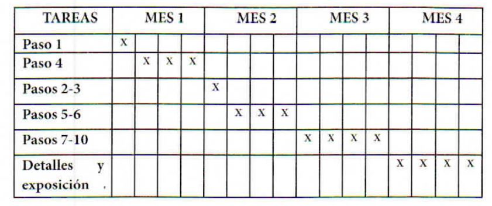

El cronograma de trabajo es utilizado como guía en el tiempo de lo que se debe hacer en la investigación. Es de suma importancia incluir un cronograma que estipule los tiempos en que se alcanzarán las metas. Su función es controlar qué hacer y cuándo hacerlo.
Es un registro tentativo de la ruta crítica mediante la cual se organiza la planeación de cada una de las actividades componentes del proyecto que va a desarrollarse tomando en cuenta los recursos.
Por un lado, contiene las fases de la investigación y por otra, los tiempos que se le dedicará a cada fase que pueden ser detallados en semanas o meses.

En el siguiente vídeo, puedes observar cómo desarrollar un cronograma de trabajo para tu investigación: